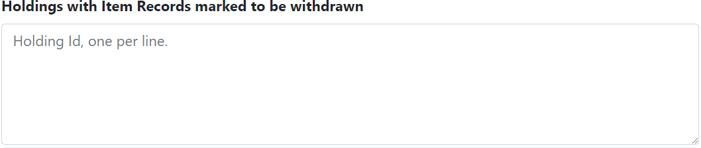

This grima simulates the 'unboxing dark library location' normalization process.
The form is where you will input your Holdings Id number(s). Input each Holdings Id number on its own line without any spacing:
Click Submit. When the grima is completed, a list of messages will appear for each Holdings Id number that is provided. There are two possible messages. The one possible message will look like the following:
Which means that Alma could not find the Holdings Record because it has been deleted, entered incorrectly or recently created.
The second possible message will look like the following:
This message provides the Holdings Id and the new location code.